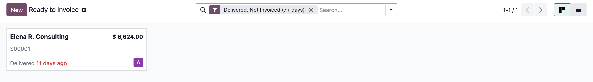
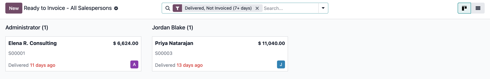
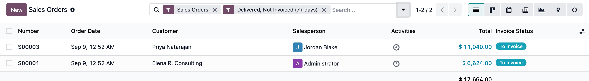

Built for follow up
A clear queue for sales teams who want completed work to become billed revenue.
A focused dashboard
The standalone Ready to Invoice app opens directly to the orders that need attention.
Your urgent work first
By default, the dashboard highlights orders delivered seven or more days ago that are still not invoiced.
Clear ownership
Each salesperson sees their own pending invoices. Approved users can open a view grouped across all salespeople.
Works with your normal sales flow
Nothing is blocked or changed automatically. Invoice the order as usual once you have reviewed it.
Find the right orders quickly
Use the dashboard for daily follow up or the Sales Orders filter when you are already working in Sales.
Dashboard: fully delivered sales orders that are still waiting for an invoice.
Aging filter: orders that have been delivered for seven days or more.
Sales Order filter: use Delivered, Not Invoiced in the Sales Orders search to find the same work from the Sales app.
See it in action
One focused queue for the logged-in salesperson, an all-team view for managers, and the same filter available from Sales Orders directly.

Your own queue. The standalone Ready to Invoice app opens straight to your delivered, unbilled orders, with the 7+ day aging filter pre-applied so the oldest ones stand out first.

The team-wide view. With the "See All Salespersons" access, the same dashboard groups every pending order by salesperson - here Administrator and Jordan Blake each have one order waiting to be invoiced.

The same filter, from Sales Orders. Already working in the regular Sales Orders list? The "Delivered, Not Invoiced (7+ days)" filter finds the identical set of orders without leaving that screen.
Make every completed delivery count
A simple dashboard that helps your team invoice the work it has already delivered.
Odoo 19 · Community and Enterprise